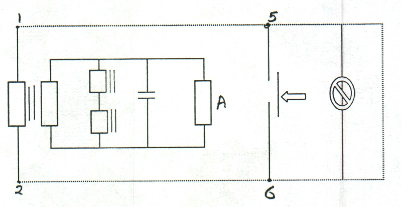

| Protection |
Earth Fault Relay
RMAH 200
ENERTIC
Document No: EFR-026-r0
Issued to: El Ghazl SS
Using SVERKER or any Injection Test Set
|
|
|
|||
| Equipment: Earth Fault Relay RMAH 200 ENERTIC |
Document No: EFR-026-r0 |
|||
|
Issued to: El Ghazl SS |
||||
| Status: |
||||
| Procedure: Using SVERKER or any Injection Test Set |
Approved Date : 02 July 2005 | |||
| Date to be Reviewed: July 2010 | ||||
Introduction
The RMAH 200 relay is an instantaneous electromagnetic relay associated with a filter tuned to the fundamental frequency
It is used to detect zero sequence currents when these are likely to contain a high proportion of harmonics notably the third harmonic in phase with the fundamental component
The type RMAH 200 relay is available in a switchboard case either fixed or plug in type with separate plug base or in case type EGE 301.
The RMAH 200 relay utilizes an electromagnetic balance with a cross beam pivoting in the horizontal plane in jewel bearings.
At the rear of the beam is located a magnetic plunger core attached by a fixed coil providing the initiating torque
The counter acting torque is exerted by a coil spring attached between the front of the cross bean and a lever fitted to the frame.
The first draft initialed by eng.Naaema Ahmed Abd alla and tested by eng. Hoda Mohamed Ahmed, at El Ghazel , accepted by General director eng. Abdel Tadross, and approved by eng. Madeha Elnagar
Safety Precautions
A
Safety fence with caution marks surrounding the work area is required.
Personal safety and healthy equipment must be used as safety shoes, safety helmet ... etc
Line isolation is required.
Make sure CT secondary circuits are shorted before isolating the relay current circuits for test current injection.
Outage arrangement must be done.
Tools and Equipment
Secondary Injection Test Set.
Test Leads.
Multi-meter.
Work to be Carried Out
Testing the Relay and Protection outputs
Preparation
Current Test
Trip Test
Test sheet
| Pick up | Reset | |
|
Current test Ampere |
||
| Reset factor | ||
Return the relay to service
Verify the test results match the relay setting, if not consult the technical services
Test trip the circuit breaker associated with the relay

Location: Equipment
Designation:
Tested by: Signature:
Test Date: